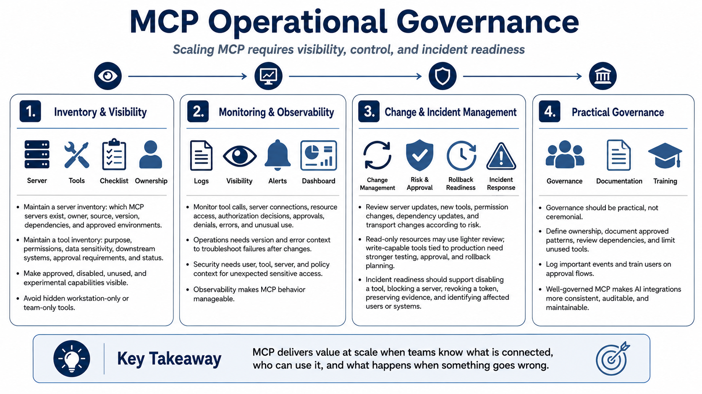

Operations, Monitoring, and Governance
Connecting to LMS... Progress: in progress

Narration
MCP needs operational governance, not only developer experimentation. A server inventory should record which MCP servers exist, who owns them, where they came from, what version is running, what dependencies they use, and which environments allow them. A tool inventory should record purpose, permissions, data sensitivity, downstream systems, approval requirements, and current status. Approved servers and disabled or unused tools should be visible, not hidden in individual workstations or team experiments.
Monitoring should cover tool calls, server connections, resource access, authorization decisions, user approvals, policy denials, errors, and unusual use. These events help teams troubleshoot problems and investigate incidents. For example, if a tool starts failing after a server upgrade, operations needs version and error information. If a sensitive resource is accessed unexpectedly, security needs user, tool, server, and policy context. Observability turns MCP behavior into something the organization can manage.
Change management is part of scaling. Server updates, new tools, permission changes, dependency updates, and transport changes should be reviewed according to risk. A read-only documentation resource may need a light process. A write-capable tool connected to production systems needs stronger review, testing, approval, and rollback planning. Incident response readiness should include how to disable a tool, block a server, revoke a token, preserve evidence, and identify affected users or systems.
Governance should be practical rather than ceremonial. Teams can scale MCP adoption by defining ownership, documenting approved patterns, reviewing dependencies, limiting unused tools, logging important events, and training users on approval flows. MCP can make AI integrations more consistent, auditable, and maintainable, but only when teams keep visibility over what is connected, who can use it, and what happens when something goes wrong.